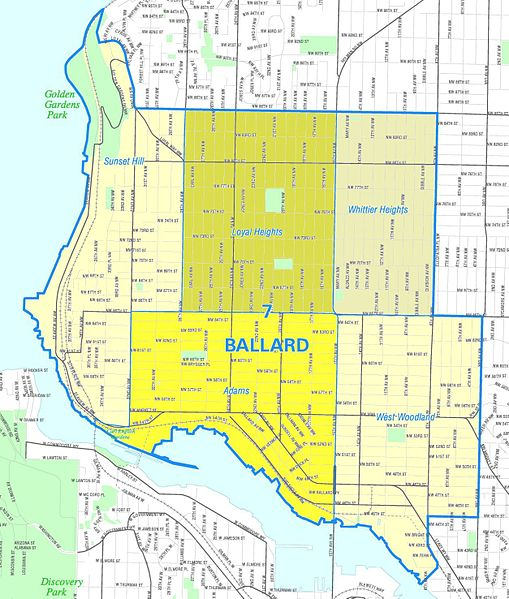
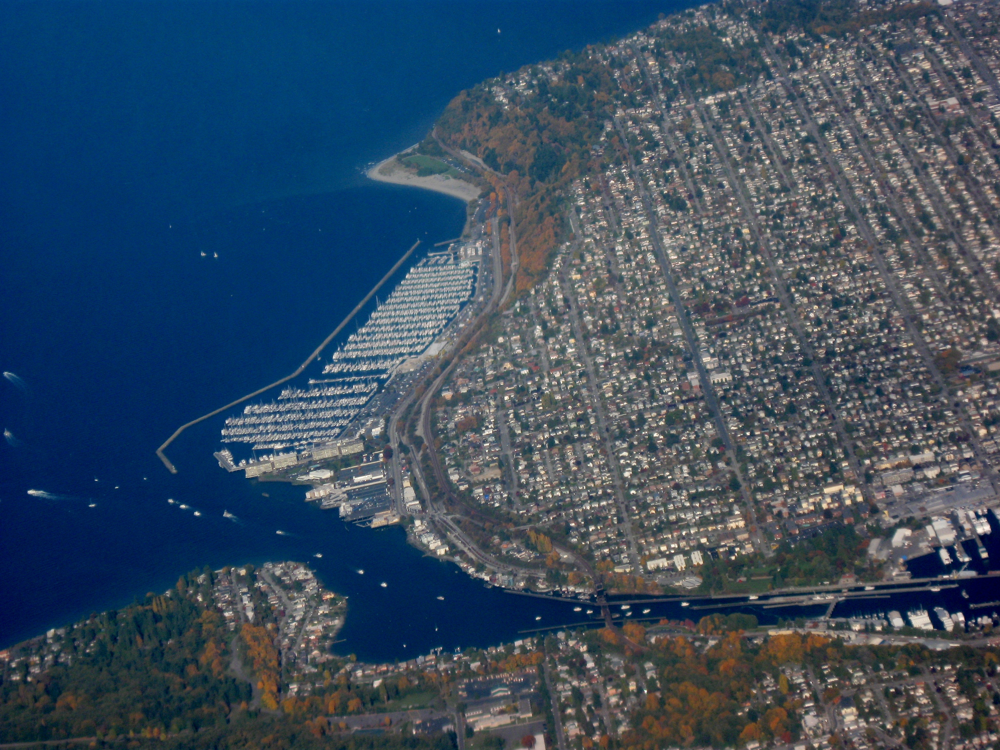

Where is Ballard?
Ballard is a neighborhood located in the northwestern part of Seattle, Washington. To the north it is bounded by Crown Hill, to the east by Greenwood, Phinney Ridge and Fremont, to the south by the Lake Washington Ship Canal, and to the west by Puget Sound's Shilshole Bay. The neighborhood's landmarks include the Hiram M. Chittenden Locks (known locally as the "Ballard Locks"), the Nordic Heritage Museum, the Shilshole Bay Marina, and Golden Gardens Park.
